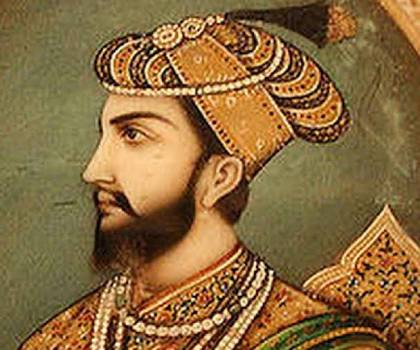

THE DELHI SULTANATE
The Khalji or Khilji dynasty was a Muslim dynasty which ruled large parts of the Indian subcontinent between 1290 and 1320. It was founded by Jalal ud din Firuz Khalji and became the second dynasty to rule the Delhi Sultanate of India. The dynasty is known for their faithlessness and ferocity, conquests into the Hindu south, and for successfully fending off the repeated Mongol invasions of India.
| Khilji Ruler |
Time Period |
| Jalaluddin |
1290-1296 |
| Alauddin |
1296–1316 |
| Shihabuddin Omar |
1316 |
| Qutbuddin Mubarak Shah |
1316-1320 |
| Khusro Khan |
1320 |
The Tughlaq dynasty also referred to as Tughluq or Tughluk dynasty, was a Muslim dynasty of Turko-Indian origin which ruled over the Delhi sultanate in medieval India. Its reign started in 1320 in Delhi when Ghazi Malik assumed the throne under the title of Ghiyath al-Din Tughluq. The dynasty ended in 1413.

The dynasty expanded its territorial reach through a military campaign led by Muhammad bin Tughluq, and reached its zenith between 1330 and 1335. Its rule was marked with torture, cruelty and rebellions, resulting in the rapid disintegration of the dynasty's territorial reach after 1335 AD.
The Sayyid dynasty was the fourth dynasty of the Delhi Sultanate, with four rulers ruling from 1414 to 1451. Founded by a former governor of Multan, they succeeded the Tughlaq dynasty and ruled the sultanate until they were displaced by the Lodi dynasty. Members of the dynasty derived their title, Sayyid, or the descendants of the Prophet Muhammad, based on the claim that they belonged to the Prophet's lineage through his daughter Fatima, and son-in-law and cousin Ali.
The Lodi dynasty was an Afghan dynasty that ruled the Delhi Sultanate from 1451 to 1526. It was the last dynasty of the Delhi Sultanate, and was founded by Bahlul Khan Lodi when he replaced the Sayyid dynasty.